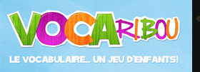
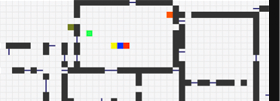

Dmitri Kolytchev
Web programmer, game and interactivity designer.
- 
- 
-
Private Codeslinger
My name is Dmitri Kolytchev, and I'm a programmer.
-
I love interactive systems - web-apps, robots, tools and pen-and-paper games (especially pen-and-paper games).
-
When I'm not working, chances are that I'll still be coding. It's meditative, like sudoku.
-
Outside of that, I'm also an amateur illustrator and Storyteller (for and of the aforementionned pen-and-paper games).